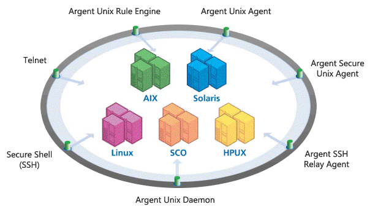

Argent Omega
Argent Omega is the next-generation Argent monitoring product.
Argent Omega provides an easy-to-use interface with integrated AI learning.
For a free 14-day evaluation simply click here
- Argent Compliance Automator
- Argent Omega Baseline
- Argent Omega for Microsoft 365
- Argent Omega for SNMP
- Argent Omega for SQL Server
- Argent Omega Web Defender
Argent Guardian Ultra
Argent Guardian Ultra is the worlds most scalable monitoring solution for all Windows, Linux, UNIX (AIX, HP-UX, SCO, Solaris), and iSeries Servers. Using a patented agent-optional architecture, Argent Guardian Ultra monitors servers with or without installing agents, providing the power and flexibility to define the monitoring architecture to match customers exact needs.
Argent Guardian Ultra monitors the health and performance of servers and when issues arise, alerts are executed via Argent Console. Argent Console can be viewed using both a traditional GUI interface, as well as a web-based interface. Over a dozen different types of alerts can be executed using Argent Console, such as alphanumeric paging, email, and SMS. Argent also can take corrective measures, such as restarting stopped or stalled services and even rebooting servers. As a result, IT personnel are notified and issues are addressed automatically before end users even know problems exist. Argent makes SLA commitments easy to meet.
Find out why more than 2,000 organizations worldwide rely on Argent to enhance the reliability and performance of their enterprise.

Agent-Optional Architecture
Using a unique and patented agent-optional architecture, Argent Guardian Ultra is the leading solution for monitoring all aspects of the enterprise from a central console. Argent Guardian Ultra supports all Windows, Linux, Unix and iSeries systems. The product is delivered with powerful, pre-defined Rule Sets containing over 10,000 Rules and pre-defined reports enabling customers to immediately maximize the reliability of production servers and applications through the automatic detection and correction of problems and issues. For example, Service Level Agreement reports can be generated each day and then automatically emailed to management.
Lower Support Costs And Increased Reliability
Argent Guardian Ultra decreases the Total Cost of Ownership (TCO) while at the same time increasing the reliability of production servers, all from a central console that can be viewed using both a traditional GUI interface, as well as a web-based interface. Over 10,000 pre-defined Rules enable customers to effectively and comprehensively monitor all production servers within two hours of installation.
Flexible Architecture: Scales To Meet Requirements
Only Argent supports a number of different monitoring architectures. Install Argent Guardian Ultra on a single server and, in a matter of minutes, monitor all the servers in the enterprise. For larger organizations, install Regional Agents for greater flexibility. For customers with unique needs, Argent Guardian Ultra supports both remote (agentless) and agent-based monitoring in the same domain. As a result, whether there are 10 servers or 10,000 servers, Argent Guardian Ultra is the ideal solution.
Argent is the choice of four of the five largest law firms on the world.
Unique n-Tier Architecture
No other product has Argent Guardian Ultras true n-tier architecture. Monitoring Groups and SuperConsoles can easily be created to group servers along business lines, geographic location, or server type; the possibilities are unlimited.
Only Argent Console enables customers to view all outstanding alerts from all Monitoring Groups worldwide on a central console as well as issue alerts when problems arise. For example, servers can be grouped by type all SQL Servers in one monitoring environment, all Exchange Servers in another, all IIS Servers in another, and so on and yet still view them all on the same console.
A Total Solution
Argent Guardian Ultra is a complete and integrated solution. Unlike other vendors who sell separate consoles and GUIs, Argent Guardian Ultra provides everything needed to completely monitor the enterprise at one cost-effective price. Argent Guardian Ultra integrates with help desk solutions such as Remedy, as well as all common hardware monitors, such as Dell OpenManage and IBM Director.
Windows Monitoring
The following is a partial list of installed Rules. Out-of-the-box,
Argent handles over 95% of your day-to-day needs.
Argent solves all your day-to-day problems automatically.
CPU
- CPU overload
- Processor bottleneck
- Excessive CPU utilization by process
- Processor errors
Disk
- Free space
- Used space
- Disk queue length
- Disk I/O by processes
Memory
- Available memory
- Excessive memory usage by processes
- Memory shortage
Network
- Network bottleneck
- Network availability
- Inbound traffic
- Outbound traffic
- Network errors
- Cluster network availability
- Cluster network interface availability
Processes
- Hung processes
- Key application processes
Service Level Agreement
- Windows API
- TCP/IP Ping
- Port Status Checks
- File Share Accessibility
- SSH Logons
Services
- ArcServe
- Backup Exec
- DB2
- DHCP Client/DHCP Server
- Lotus Domino
- IBM Websphere HTTP
- IIS
- Oracle
- Routing And Remote Access
- Print Spooler
- SQL Server
- ICA Browser
- Terminal Services
System
- Availability
- Registry Keys
- System Uptime
- Service Pack Levels
- PowerShell/WMI Connectivity
Linux/Unix Monitoring
Because of Argents unique architecture, Argent installs in under 10 minutes and
is monitoring your environment in under an hour.
Argent gives you the choice of any or all of the following seven methods to
monitor your Linux and Unix servers:

Centrally Located Scripts No Confusion
Argent holds all Unix and Linux Rule Scripts on central W200x servers, so all your Rule Scripts for all Unix and Linux platforms are centrally maintained easy to find, easy to use, and easy to backup. No more searching for the machine holding that critical but elusive script, and no more confusion with 10 different versions of the same script on 10 different servers.
Argent gives you the choice of any or all of seven methods to access your Unix and Linux servers.
Script-based Flexibility No Learning Curve
Argent monitors all Unix and Linux platforms using Rule Scripts, providing Customers with complete flexibility and ease of use. Argent provides a complete set of Rule Scripts for all platforms covering all your common, day-to-day monitoring needs. And you can easily add to your own scripts.
Total Testing Saving You Time
Argent provides total testing for all scripts before they go live even today most vendors have no test facilities or test logs. Argent is designed for the real world, where you reside.
Partial Rule List
The following is a partial list of installed Rules. Out-of-the-box, Argent handles over 95% of your day-to-day needs.
CPU
- CPU utilization
- CPU trend analysis
- 1-minute load average
- Excessive CPU by process
Disk
- Free disk space
- Used disk space
- Swap space used
- Available swap space
Memory
- Free memory
- Excessive memory usage by process
Network
- Network bandwidth
- Network traffic
- Network issues
- Network performance
- Network connections
Processes
- Oracle user processes
- Running processes
- Sleeping processes
- Zombie processes
Databases
- Oracle
- MySQL
- Sybase
System
- TCP/IP Ping
- DB2 port check
- Oracle listener port check
- SMTP port check
- POP3 protocol verification
- SMTP protocol verification
- Server response time
- Connected users
- OS level
Daemons
- lpsched
- NFS biod
- NFS lockd
- NFS mountd
- NFS nfsd
- NFS statd
Miscellaneous
- System log
- Boot log
- Cron log
- FTP log
- Sendmail log
- Postfix log
- NTP log
iSeries/AS400 Monitoring
The following is a partial list of installed Rules. Out-of-the-box,
Argent handles over 95% of your day-to-day needs.
Argent solves all your day-to-day problems automatically.
CPU
- CPU utilization
- Job CPU usage
Disk
- Free disk space
- Used disk space
Jobs
- Job not active
- Job state
- Job Queue status
- Batch jobs ended with
- Batch jobs ending
- Batch jobs held
- Batch jobs held on job
- Batch jobs on held job
- Batch jobs on unassigned
- Batch jobs running
- Batch jobs scheduled
- Batch jobs waiting
Network
Line/Control Unit/Device/Network Interface/Network Server status
TCP stack not active
System
- Oracle
- Server response time
- TCP/IP ping
- Library size
- Concurrent users
- Messages in Message Queue
- Output Queue status
- Subsystem not active
- System ASP utilization
- System Pool size
- System Pool status
- Job Audit log
- Journal Audit log
- QHST log
- Concurrent users
- Additional storage too low
- ASP system storage too low
- Auxiliary storage lower limit too low
- Current unprotected storage used too high
- Main storage size too low
- Main storage size of all pools too low
- Maximum unprotected storage too high
- Overflow storage too low
- Total auxiliary storage too low
- Users signed off
- Users signed off with printer output
- Users signed on
- Users suspended due to group jobs
- Users suspended due to SYSREQ
Argent AWS
AWS is new, AWS is exciting, and AWS is grossly undermanaged.
While Amazon has done a superb job, an independent, agnostic, and even-handed outside auditor and monitor is essential for all production AWS implementation.
This is precisely what the new Argent for AWS provides.
AWS is growing by the day, and it is getting more and more difficult to have a global view of your entire AWS environment.
Argent for AWS provides the following baseline facilities:
- Ability To Monitor All Aspects Exposed By AWS Console And AWS SDK
- Integration With Argent Console, The Worlds Leading Alerting Console
- Integration With Argent Predictor For Long-Term Trend Analysis (Not Just 14 Days)
- Capable Of Native Monitoring of Windows And Linux Applications
- Comprehensive S3 Monitoring
- Complete Log Monitoring On S3, EBS Volume Or EC2 Instance Store Volume
EC2
- Instance State
- Instance Status
- System Status
- CPU
- Disk Read Operations
- Disk Write Operations
- Disk Read Bytes
- Disk Write Bytes
- Network Incoming Bytes
- Network Outgoing Bytes
- Network Incoming Packets
- Network Outgoing Packets
EC2 Credits
- CPU Credit Usage
- CPU Credit Balance
EC2 Operating System
- Windows Performance Rules
- Windows Service Rules
- Windows Event Rules
- Windows File Log Rules
- Linux Script Rules
- LINUX File Log Rules
Elastic Beanstalk Application
- Health Status
- Health Color
- App Events
RDS
Database Status
RDS Events
DB Connections
Free Storage Space
CPU
Freeable Memory
Swap Usage
IO Disk Queue Depth
IO Read IO OP
IO Write IO OP
IO Read Throughput
IO Write Throughput
Network Receive Throughput
Network Transmit Throughput
Replica Lag
RDS Credits
- CPU Credit Usage
- CPU Credit Balance
DynamoDB
- Table Row Count
- Table Size
- Conditional Check Failed Requests
- Consumed Read Capacity Units
- Consumed Write Capacity Units
- Provisioned Read Capacity Units
- Provisioned Write Capacity Units
- IO Read Throttle Events
- Query Returned Item Count
- Stream Returned Bytes
- Stream Returned Records Count
- IO Successful Request Latency
- IO Successful Request Count
- System Errors
- IO Throttled Requests
- User Errors
- IO Write Throttle Events
S3
- S3 Object
- S3 Log
- Bucket Size
- Object Count
CloudWatch
- All CloudWatch Metrics
Argent Console
Argent Console is the worlds leading alerting console.
With Argent Console, Alerts can be consolidated from customer applications, third-party products, as well as from all Argent products.
All Alerts and alarms from customer applications and third-party products can be consolidated using Argents powerful ActiveX and XML interfaces. Any number of third party packages can send Alerts directly to the console as well.
Argent Console is the perfect solution for a customers central console. Argent Console allows tracking of and creates Alerts about all events as they occur on the network.
Enterprise Application View
What Argent provides today is an Enterprise View of Customers critical applications. Rather than just monitoring the CPU load in isolation, Argent integrates this single metric into a custom weighted scheme.
For example, take an Exchange 2007 environment running on four servers.
If one server fails, then Argent reports the Exchange environment has been degraded by 20% and sends out one set of Argent Alerts.
If two servers fail, Argent Enterprise View reports a 50% degradation and send out additional Argent Alerts.
If three servers fail, then Argent Enterprise View will report a 85% degradation.
Customers can adjust the parameters to meet their needs. The impact of a single event can be entirely different than that of multiple events.
Argent Enterprise View looks at all of the applications critical components. It does not matter if the various components are distributed throughout the world.
Argent monitors all aspects of your critical applications.
Unprecedented SNMP Support
Argent Console provides a new level of support to receive alarms and Alerts from any SNMP device and record it on the central Argent Console.
Unlimited Alerting And Alert Escalation
Argent Console has long been known for its powerful array of Alerts such as Email Alerts, Alphanumeric Pager Alerts, Network Message Alerts, SMS Alerts, SQL Alerts (that fire customer created SQL scripts as an Alert), and Service Alerts (to stop and restart Windows Services).
These Alerts can be used with pre-existing applications the alarm is simply sent to Argent Console, the customer specifies which alert is to be fired and Argent does the rest.
Escalating Alerts allow customers the ability to specify a detailed alerting sequence for any particular issue. For instance, if employee X is alerted via email and does not respond, then employee Z will be alerted via pager, etc. Customers have complete control over escalation details including who will be notified and how the alert will be sent.
Ease Of Use
The Total Support Interface, part of Argent Console, enables the sending of any customized Alerts directly to the console.
Because of the universal nature of Argent Console, the ActiveX interface allows the sending of alarms and Alerts from literally any language, from PERL to Visual Basic, to C++.
The Total Support Interface provides complete code samples, technical notes, and engineering notes and an SDK.
Automation
Argent introduces a powerful new automatic report distribution facility to allow the receiving of specific reports that are considered important to the customer. Reports can be scheduled of the customers top-10 issues or weekly reports of the top-10 problematic servers. And of course, the revolutionary Argent calendaring features, popular in Argent AT and Argent Job Scheduler, are fully supported.
Argent divides Alerts into two categories, Notification and Correction Alerts.
The following table lists some of the installed Alerts.
Notification Alerts
- Alphanumeric Pager
- Network Message
- SMS
- System Alarm
- Third-Party Help Desk
- Unix Action Script
- Windows Event Log
Correction Alerts
- iSeries Commands
- ODBC/SQL Query
- PowerShell Action Scripts
- Service Start/Stop/Restart
- SNMP
- System Commands
- System Reboot
- Linux/Unix Action Scripts
- WMI Action Scripts
SuperMaps lets you quickly see the Alerts for your entire enterprise
Any image can be used as a SuperMap geographical maps, network diagrams, floor plans or a even a digital photo of a server rack
SuperMaps represents Alerts as dots, varying from red, orange, yellow, or green all configurable of course
Individual SuperMaps can also be hot-linked together, allowing you to effectively zoom in from macro to micro within a few mouse clicks
SuperMaps can also be viewed and shared using a web browser through Argents revolutionary Web 2.0 dashboard Argent Commander
To discuss SuperMaps with an Argent professional, please email
SuperMaps@Argent.com
Argent for SharePoint
For a live demo site, visit http://help.argent.com/#e_sp
Details
Understanding SharePoint Monitoring
What are Instant Best Practices?
Instant Best Practices are Argents unique technology that combines the best expert knowledge into one fully-integrated solution.
Until Instant Best Practices, youd have to read tedious White Papers, download and install quirky scripts, install so-called Management packs, find a slew of vendors add-ons, etc, etc, etc.
All these tedious chores took you time and not to mention all the finger pointing from different vendors.
Rather than being a manager and looking to move up the food chain, you were stuck wasting your time doing the donkey work of trying to make yet-another badly written script work for your environment.
Argent Instant Best Practices Ready For Tomorrow
With Argents unique technology, hassles are a thing of the past.
There are a lot of critical variables, thresholds, metrics and components you need to be on top of.
But theres the rub what variables should you monitor?
Even after youve read all the dozens of Technical Papers, Tuning Guides, downloaded all the scripts, you now have to decide what values make sense.
With Argents Instant Best Practices, all the donkey work is done for you Instant Best Practices has all the critical variables and values defined.
In one click you can have Argent Instant Best Practices working for you.
The following is a partial list of installed Rules. Out-of-the-box,
Argent handles over 95% of your day-to-day needs.
Argent solves all your day-to-day problems automatically.
MOSS Configuration
- Excessive Keywords Per Site
- Excessive Managed Properties
- Excessive SSPs
- Excessive User Profiles
MOSS Search
- Deep Crawls
- Excessive Crawls Per SSP
SharePoint Configuration
- Excessive Web Applications
SharePoint File System
- Excessive Fat Documents
- Excessive Flat Folders
SharePoint Sites
- Excessive Number of Subsites
- Excessive Number of Sites
- Overloaded Web Sites
Connectivity
- Windows NetRemote TOD API Check
- TCP/IP Ping
Performance
- CPU Utilization
- Free Disk Space
- Memory Utilization
- Network Utilization
- SharePoint Search Query Count
PowerShell Management
- Active Directory Disabled Accounts
- Unauthorized Network Shares
Services
- SharePoint Search Service
- SharePoint Timer Service
- SharePoint Admin Service
- SharePoint Writer Service
Argent for Exchange
Details
What are Instant Best Practices?
Instant Best Practices are Argents unique technology that combines the best expert knowledge into one fully-integrated solution.
Until Instant Best Practices, youd have to read tedious White Papers, download and install quirky scripts, install so-called Management packs, find a slew of vendors add-ons, etc, etc, etc.
All these tedious chores took you time and not to mention all the finger pointing from different vendors.
Rather than being a manager and looking to move up the food chain, you were stuck wasting your time doing the donkey work of trying to make yet-another badly written script work for your environment.
Argent Instant Best Practices Ready For Tomorrow
With Argents unique technology, hassles are a thing of the past.
There are a lot of critical variables, thresholds, metrics and components you need to be on top of.
But theres the rub what variables should you monitor?
Even after youve read all the dozens of Technical Papers, Tuning Guides, downloaded all the scripts, you now have to decide what values make sense.
With Argents Instant Best Practices, all the donkey work is done for you Instant Best Practices has all the critical variables and values defined.
In one click you can have Argent Instant Best Practices working for you.
The following is a partial list of installed Rules. Out-of-the-box,
Argent handles over 95% of your day-to-day needs.
Argent solves all your day-to-day problems automatically.
System Performance
- CPU Utilization
- Free Disk Space
- Memory Utilization
- Network Utilization
End-to-End User Experience
- Mail Flow (Round Trip) Latency
- MAPI Connectivity and Latency
- Outlook Anywhere Latency
- Outlook Web Access (OWA) Latency
Infrastructure
- DNS Resolution Time
- Active Directory Logon Delays
- System Health
- Service Health
- Excessive Message Count In Queue
- Exchange Connector Down
- ActiveSync Testing
- Exchange Search Testing
Information Storage
- Mailbox Database Size Too Large
- Mailbox Size Limit Exceeded
- Mailbox Message Count Exceeded
- Mailbox Inactivity
- Mailbox Quota Exceeded
- Public Folder Database Too Large
- Public Folder Size Limit Exceeded
- Public Folder Message Count Exceeded
- Public Folder Inactivity
Exchange Mail Flow
- Undeliverable Email Events
- Delayed Email Events
- Delivery Status Notification Events
- Message Delivery Failed Events
- Maximum Delivery Attempts Exceeded Events
- Excessive Emails Sent From An Account
- Excessive Emails Received By An Account
Exchange Accounts
- Account Creation
- Account Modification
- Account Deletion
Services
- Exchange Services
Connectivity
- MAPI Logon/Logoff
- TCP/IP Ping
- POP3, SMTP Protocol Verification
- Windows NetRemote TOD API Check
- Too Many Users Logged On
- Exchange Server Unreachable
- IMAP, NNTP, POP3, SMTP Server Stopped
- PowerShell Management
Clusters
- Cluster Node/Group/Network/Network Interface/Resource Check
- Cluster Resource Offline/Failed
Argent for Java
What is Argent for Java?
Why Argent for Java?
The Java Virtual Machine (JVM)
Memory Management
Heap Memory
The following is a partial list of installed Rules. Out-of-the-box,
Argent handles over 95% of your day-to-day needs.
Argent solves all your day-to-day problems automatically.
General
- JVM Uptime
- JVM CPU Usage
- JVM CPU Time
- JVM Total Compile Time
- JVM Physical Memory Usage
- JVM Swap Space Usage
- Custom MBeans Attributes
- Unix Rules
Garbage Collector
- JVM Garbage Collection Count
- JVM Garbage Collection Time
Heap Memory
- JVM Survivor Space Statistics Rules
- JVM Eden Space Statistics Rules
- JVM Old Space Statistics Rules
- JVM Overal Heap Memory Space Utilization
Non-Heap Memory Statistics
- JVM Metaspace
- JVM Compressed Class Space
- JVM Code Cache Statistics
- JVM Overall Non-Heap Memory Space Utilization
Class Loader Statistics
- JVM Total Classes Loaded
- JVM Current Classes Loaded
Thread Statistics
- JVM Live Thread Count
- JVM Live Daemon Thread Count
- JVM Peak Live Thread Count
- JVM Total Threads Started Count
- JVM Total Threads CPU Time
- JVM Deadlocked Threads
Argent for SNMP
Argent for SNMP is more than just a monitoring solution like all Argent products, Argent for SNMP is a complete automation solution, automating all the essential, but labor-intensive chores that all customers must perform to ensure your SNMP devices run smoothly.
Here are some of the features that Argent for SNMP provides:
- Reliable SNMP Discovery
- Network Topology Discovery
- Argent Universal MIB Library
- Support for all SNMP Versions
- Enhanced SNMP Trap Handling Model
- Readability of SNMP Events
- Automatic Monitoring monitor devices in a few clicks
For a live demo site, visit http://help.Argent.com/#e_afs

Automation Automate All Your Work
With uniquely powerful built-in scheduling, customers can prioritize SNMP monitoring and schedule data collection for performance reports to take place in real time, once an hour or only in the evenings and advanced calendaring options allow any number of different monitoring policies.
See The Benefits For Yourself
The benefits of Argent for SNMP over its venerable predecessor are numerous read the Argent Encyclopedia document at http://help.Argent.com/#e_afs
The following is a partial list of installed Rules. Out-of-the-box,
Argent handles over 95% of your day-to-day needs.
Argent solves all your day-to-day problems automatically.
Management
- Built-in MIB and OID Browser
- Formula Expressions
- Long Walk
- OID Aliases
- Walk Within Branch
SNMP Rules
- 3Com
- APC
- Banyan
- Brocade
- Checkpoint
- Cisco
- Compaq
- Dell
- Emulex
- Extreme Network
- Fortinet
- Foundry
- HP
- IBM
- Intermec
- JetDirect
- Lannet
- Lexmark
- Liebert
- Linux/Unix
- Lucent
- Microsoft
- Netscreen
- Novell
- Sonic
- UPS
- Web Logic
Performance and Latency
- Bandwidth Usage
- Port Status
- Throughput
- TCP/IP Ping
- TCP Port Check
- Packet Loss %
- SNMP Service Availability
SNMP Trap Rules
- 3Com
- APC
- Banyan
- Brocade
- Checkpoint
- Cisco
- Compaq
- Dell
- Emulex
- Extreme Network
- Fortinet
- Foundry
- HP
- IBM
- Intermec
- JetDirect
- Lannet
- Lexmark
- Liebert
- Linux/Unix
- Lucent
- Microsoft
- Netscreen
- Novell
- Sonic
- UPS
- Web Logic
Argent for Storage
Proactive Monitoring and Reporting
The following is a partial list of installed Rules. Out-of-the-box,
Argent handles over 95% of your day-to-day needs.
Argent solves all your day-to-day problems automatically.
EMC VNX
- Array Status
- Array Power Status
- Standby Power Supply Status
- Main Power Supply Status
- Storage Processor Engine Power Status
- Hard Read Error
- Hard Write Error
- Soft Read Error
- Soft Write Error
- Disk Utilization
- Raid Group Utilization
- Defragmentation\Expansion Performance
- Storage Processor Utilization
Argent for XenApp
Argent for XenApp is more than just a monitoring solution like all Argent products, Argent for XenApp is a complete automation solution, automating all the essential but labor-intensive chores that all customers must perform to ensure XenApp runs smoothly.
The most significant aspect of Argent for XenApp is the use of a number of different approaches to monitoring XenApp, unifying a centralized monitoring platform for XenApp running on all Windows or Linux/Unix systems. Think of Argent for XenApp as four or five discrete products all integrated into one super-product.
Details
Argent for XenApp monitors and reports on XenApp baselines, such as availability,
access rules, authentication, licensing and ICA session rules.
Argent for XenApp integrates with pre-defined Argent Reports that can be
automatically emailed every morning to show the actual health and performance of
XenApp.
The following is a partial list of installed Rules. Out-of-the-box,
Argent handles over 95% of your day-to-day needs.
Argent solves all your day-to-day problems automatically.
XenApp Application Monitoring Rules
- Anonymous Connection Rules
- Application Availability Rules
- Application User Count Rules
- Disabled Application Rules
- Process CPU Usage Rules
- Session Usage Time Rules
XenApp Availability Rules
- AppController Rules
- Citrix License Server Rules
- Common Citrix Communication Port Rules
- EdgeSight Rules
- Password Manager Rules
- StageManager Rules
- XenApp Rules
- XenClient Rules
Accessibility Monitoring Rules
- Desktop Access Rules
- Directory Access Rules
- RADIUS Rules
Agent Monitoring Rules
- Citrix Safeword Rules
- RSA Rules
- User-Agent HTTP Header Rules
Authentication Monitoring Rules
- Access Gateway Authentication Rules
- Anonymous Logon Rules
- Context Look-up Failure Rules
- Invalid Authentication Rules
- Novell Directory Services[NDS] Rules
- Two-factor Authentication Rules
- Web Interface Authentication Rules
- Workspace Control Rules
Miscellaneous
- Citrix Online Plugin Monitoring Rules
- Citrix Streaming Service Monitoring Rules
- Citrix XML Service Monitoring Rules
- Client Detection Monitoring Rules
- Event ID File Monitoring Rules
- ICA File Signing Monitoring Rules
- Password Manager Monitoring Rules
- SSL Connection Monitoring Rules
- Secure Ticket Authority Monitoring Rules
Configuration Monitoring Rules
- Protocol Transition Service Rules
- Site Configuration Rules
- Web Interface Configuration Rules
Permission Monitoring Rules
- Client For Java Rules
- Client Installer Rules
- Language Pack File Rules
- Server Monitoring Rules
Server Error Rules
- Server Farm Rules
- Server License Rules
Citrix CPU Utilization Management User Rules
- CPU Entitlement Rules
- CPU Shares Rules
- CPU Usage Rules
- Long-term CPU Usage Rules
Citrix IMA Networking Rules
- Bytes Received Per Second Rules
- Bytes Sent Per Second Rules
- Network Connections Rules
Citrix Licensing Rules
- Average License Check-In Response Time Rules
- Average License Check-Out Response Time Rules
- Last Recorded License Check-In Response Time Rules
- Last Recorded License Check-Out Response Time Rules
- License Server Connection Failure Rules
- Maximum License Check-In Response Time Rules
- Maximum License Check-Out Response Time Rules
Citrix MetaFrame Presentation Server Rules
- Application Resolution Time Rules
- Application Resolutions Per Second Rules
- Cumulative Server Load Rules
- Data Store Connection Failure Rules
- Data Store Bytes Read Rules
- Data Store Bytes Read Per Second Rules
- Data Store Bytes Written Per Second Rules
- Data Store Reads Rules
- Data Store Reads Per Second Rules
ICA Session Rules
- Input Audio Bandwidth Rules
- Input Clipboard Bandwidth Rules
- Input COM Bandwidth Rules
- Input Control Channel Bandwidth Rules
- Input Drive Bandwidth Rules
- Input Font Data Bandwidth Rules
- Input Licensing Bandwidth Rules
- Input Printer Bandwidth Rules
- Input Seamless Bandwidth Rules
- Input Session Bandwidth Rules
- Input Session Compression Rules
- Input Session Line Speed Rules
- Latency Last Recorded Rules
- Latency Session Average Rules
- Latency Session Deviation Rules
- Output Audio Bandwidth Rules
- Output Clipboard Bandwidth Rules
- Output COM Bandwidth Rules
- Output Control Channel Bandwidth Rules
- Output Drive Bandwidth Rules
- Output Font Data Bandwidth Rules
- Output Printer Bandwidth Rules
- Output Seamless Bandwidth Rules
- Output Session Bandwidth Rules
- Output Session Compression Rules
- Output Session Line Speed Rules
- Output ThinWire Bandwidth Rules
Secure Ticket Authority Rules
- STA Count of Active Tickets Rules
- STA Good Data Request Count Rules
- STA Good Ticket Request Count Rules
- STA Peak All Request Rate Rules
- STA Peak Ticket Request Rate Rules
- STA Ticket Timeout Count Rules
XenApp Server Monitoring Rules
- XenApp Server Load Rules
XenApp Service Status Monitoring Rules
- CPU Rebalancer Service Rules
- Resource Management Service Rules
- Citrix Independent Management Architecture Service Rules
- Citrix Licensing Service Rules
- Citrix Licensing WMI Service Rules
- Citrix MFCOM Service Rules
- Citrix Print Manager Service Rules
- Citrix Streaming Service
- Citrix Virtual Memory Optimization Service Rules
- Citrix WMI Service Rules
- Citrix XML Service Rules
- Citrix XTE Server Service Rules
- Remote Desktop Service Rules
XenApp Session Monitoring Rules
- Active Session Count Rules
- Connected Session Count Rules
- Disconnected Session Count Rules
- Listening Session Count Rules
- User Specific Session Count Rules
Argent for Active Directory
Argent for Active Directory is more than just a monitoring solution like all Argent products, Argent for Active Directory is a complete automation solution, automating all the essential but labor-intensive chores that all customers must perform to ensure Active Directory runs smoothly.
With all the layoffs, there are fewer people to do more work this is why Argents unique Instant Best Practices is essential who has the time to read White Papers?
The most significant aspect of Argent for Active Directory product is the use of a number of different approaches to monitoring Active Directory: PowerShell, WMI, and classic Windows APIs are all used in different parts of the product. Think of Argent for Active Directory as four or five discrete products all integrated into one super-product.

Details
Argent for Active Directory monitors and reports on Active Directory baselines, such as DNS, LDAP response times, file replication, trusts and authentication.
Argent for Active Directory comes with pre-defined SLA reports that can be automatically emailed every morning to show the actual health and performance of Active Directory.
What are Instant Best Practices?
Instant Best Practices are Argents unique technology that combines the best expert knowledge into one fully-integrated solution.
Until Instant Best Practices, youd have to read tedious White Papers, download and install quirky scripts, install so-called Management packs, find a slew of vendors add-ons, etc, etc, etc.
All these tedious chores took you time and not to mention all the finger pointing from different vendors.
Rather than being a manager and looking to move up the food chain, you were stuck wasting your time doing the donkey work of trying to make yet-another badly written script work for your environment.
Argent Instant Best Practices Ready For Tomorrow
With Argents unique technology, hassles are a thing of the past.
There are a lot of critical variables, thresholds, metrics and components you need to be on top of.
But theres the rub what variables should you monitor?
Even after youve read all the dozens of Technical Papers, Tuning Guides, downloaded all the scripts, you now have to decide what values make sense.
With Argents Instant Best Practices, all the donkey work is done for you Instant Best Practices has all the critical variables and values defined.
In one click you can have Argent Instant Best Practices working for you.
Active Directory
- Bad Password Counts
- Created Users
- Disabled Users
- Group Members
- Locked User Counts
- Unchanged Passwords
Authentication
- Kerberos Authentication Rates
- NTLM Authentication Rates
- Check Logon Authentication
Connectivity
- Active Directory Web Services
- Distributed File System Replication
- Global Catalog Server
- Kerberos
- LDAP SSL
- RPC Server
- Server Message Block (SMB)
- SMTP Replication
Directory Services
- DRA Inbound/Outbound Bytes/Sec
- DRA Pending Replications
- Name Cache Hit Rate
DNS
- DNS Authentication
- DNS Event Logs
- DNS Resolution (Any Record Type)
- DNS Server Services
- Connectivity
File Replication
- Binding Errors
- Change Orders
- File Errors
- Packets Sent/Received
- USN Records
LDAP
- Bind Times
- Client Sessions
- Custom LDAP Queries
- Services
- Distributed File System
- Intersite Messaging
- Kerberos Key Distribution Center
- Net Logon
- Resultant Set of Policy Provider
- Routing and Remote Access
- Windows Time
System
- CPU Usage
- Memory Usage
- Disk Storage Usage
- File Accessibility
- Protocol Verification
- System Uptime
- Service Pack Level
- TCP/IP Port Checks
Argent for SAP
SAP runs your business, Argent for SAP ensures your SAP runs flawlessly.
Argent monitors your SAP landscape in real time ensuring critical business functions never slows down, or worse, stop.
Argent simplifies monitoring the complex SAP environment and helps administrators troubleshoot issues before they become critical.
Argent for SAP installs in under 10 minutes, but has more power than any product on the market.
What are Instant Best Practices?
Instant Best Practices are Argents unique technology that combines the best expert knowledge into one fully-integrated solution.
Until Instant Best Practices, youd have to read tedious White Papers, download and install quirky scripts, install so-called Management packs, find a slew of vendors add-ons, etc, etc, etc.
All these tedious chores took you time and not to mention all the finger pointing from different vendors.
Rather than being a manager and looking to move up the food chain, you were stuck wasting your time doing the donkey work of trying to make yet-another badly written script work for your environment.
Argent Instant Best Practices Ready For Tomorrow
With Argents unique technology, hassles are a thing of the past.
There are a lot of critical variables, thresholds, metrics and components you need to be on top of.
But theres the rub what variables should you monitor?
Even after youve read all the dozens of Technical Papers, Tuning Guides, downloaded all the scripts, you now have to decide what values make sense.
With Argents Instant Best Practices, all the donkey work is done for you Instant Best Practices has all the critical variables and values defined.
In one click you can have Argent Instant Best Practices working for you.
General
- Access Point Status
- Dispatcher Queue Status
- Enqueue Lock Counts
- Enqueue Server Statistics
- Host Agent Status
- Instance Status
- Open Alerts
- Process Status
- SAP/Oraclce Services
- Trace Files
Java
- Garbage Collection
- Heap Memory
- Java Instance Components
- Java Instance Thread
- Cache
- EJB Sessions
- Remote Object Connections
- Shared Memory Table
ABAP
- System Log Rules
- Work Process Rules
ICM
- Cache Entries Count
- Cache Size
- Proxy Connection Status
- Thread Status
- Worker Thread Count
Operating System
- CPU Usage
- Disk Usage
- Memory Usage
- Service Level Agreement
- Windows Events
Argent Job Scheduler
The days of manually scheduling and managing batch processes are over. Business process automation lowers overall IT costs, ensures application efficiency, enhances IT service, and assists with compliance automation. Argent Job Scheduler and Argent Queue Engine automate business processes, alert customers via Argent Console when issues occur, and provide Service Level Agreements so that management receives the Business View of IT. Argent Job Scheduler provides a single point of control across all operating systems, applications and databases for Windows, Linux, Solaris, HP-UX, AIX, SCO and iSeries Servers.
Business process automation is simplified with Argent Job Scheduler and Argent Queue Engine. Installation requires no reboot. Argent Job Scheduler has a comprehensive feature set, including complete forecasting, auditing, calendaring, and failover, as well as job and file dependency support.
World View Web Interface
Argent World View is a Web 2.0 interface for Argent Job Scheduler.
Argent World View integrates Argent Job Scheduler GUI and the Queue Engine functionalities into a single pane of glass.
Once installed, Argent World View can be browsed from anywhere as long as sufficient security and access rights are provided.
For a live demo site, visit http://WorldView.Argent.com

Centralized Job Scheduling
From a central scheduling server, Argent Job Scheduler can submit jobs to an unlimited number of servers where the batch jobs actually execute. All jobs on all servers regardless of platform can be viewed on the central console, which is also web-enabled. Any user with the appropriate rights on any workstation or server can view the central job scheduling console. With the powerful filtering capabilities, administrators, operators, and users can quickly and easily obtain customized views of their own jobs. From a central client GUI, jobs can be submitted to an unlimited number of Argent Queue Engine Servers including Windows, Linux, Unix, iSeries and other platforms where the batch jobs actually execute.
Queue Priorities: Critical Work Runs First
Up to 256 batch queues can be defined on a server where batch jobs execute. Each queue can have its own execution priority customers can define one queue for high-priority jobs, another queue for intermediate priority jobs, and a third queue for low-priority jobs. Thus all jobs in the high-priority queue get CPU resources before all jobs in the other two queues. Each batch queue can run almost 33,000 jobs.
Argent Exploits SMP Architecture
Individual queues can be associated with specific processors in an SMP environment. For example, on an 8-way server, CPU-7 can be associated with a queue and the jobs in that queue will only use that processor. This facility gives you the performance of true load balancing, and makes the most of expensive and powerful SMP Servers.
Complete Work Load Balancing
Argent Job Scheduler provides complete server load balancing, whereby a job can be submitted to the server that currently has the lowest CPU load. This enables the most efficient use of hardware resources. Once defined, this load balancing is automatic and requires no manual intervention.
Total Job Dependency Support
Argent Job Scheduler provides full job dependency support so that complex job streams are easily created and managed. Automatic job failure retry permits job streams to restart without manual intervention.
Total File And ODBC Dependency Support
File dependency support enables a job to automatically start executing only after all the files required are present on one or more servers. Argent Job Scheduler also has full file dependency support for files located on FTP sites.
Uniquely Powerful Calendaring
Some businesses may start the fiscal year on July 1st while the U.S. federal government starts its fiscal year on October 1st. Employees may get paid biweekly or on a monthly basis. Regardless of the calendar, Argent Job Scheduler is easily customized to meet specific needs. Argent Job Scheduler is delivered with a number of pre-built calendars that can be customized to meet exact requirements. Creating calendars based upon fiscal years, manufacturing cycles, payroll periods, etc., allows customers the freedom easily to customize the product to best suit their organization.
Alerts You When Jobs Fail
Argent Job Scheduler in conjunction with Argent Console has extensive alerting facilities so the appropriate parties can be alerted when jobs fail. Alerts can be issued via email, alphanumeric pager, SMS, pop-ups, and beeper. Argent Job Scheduler also provides the ability to automatically resubmit failed jobs. Argent Job Scheduler is tightly integrated with Argent Console, resulting in customers benefiting from all the advanced console and alert escalation features of Argent Console when jobs fail.
Full Redundancy
An unlimited number of backup servers can be defined for Argent Job Scheduler so that if the primary job scheduling server fails or it loses its network connection, job scheduling continues on a backup server. Once defined, the failover process is automatic. Once the primary scheduling server is operational again, all processing reverts back to the primary server.
Reporting
Argent Job Scheduler has a full set of reports, enabling Operations Managers to create reports that run on a daily, weekly, monthly, or on an ad-hoc basis. In addition, projected load reports are also available that enable seeing the CPU and other resources needed to run the days jobs.
Uniquely Powerful Simulation
Argent Job Schedulers job simulation feature allows the quick simulation of when and how often jobs will run over a period of time. A simulation of a large block of time, such as a full day, can be performed in just seconds since the computers time is rapidly incremented.
Argent WorldView
Argent WorldView is a Web 2.0 product that integrates with all your existing Argent Job Scheduler installations
Argent WorldView serves as a primary web interface for Argent Job Scheduler; here are the benefits:
- Customers no longer need to login to the server physically, or using remote desktop to see the status of jobs.
- Overcomes the limitation on the number of users accessing the data through remote desktop
- Seamlessly integrates the Argent Job Scheduler and Argent Queue Engine functionalities into a single web console
- Once installed, Argent WorldView can be browsed literally from anywhere; provided you have sufficient access rights
Supporting Browsers: IE 9 and above, Firefox, Chrome, Safari
Supporting Devices: Standard computers, Tablets, Smart phones
For a live demo site, visit http://WorldView.Argent.com


Argent Sentinel
Argent Sentinel is a comprehensive web URL and Server monitoring product from Argent
Below are important features and benefits of Argent Sentinel
1. End-To-End Web Monitoring:
- Handles all known HTTP error codes
- Check for one or more known error codes for each URL
Example: Check bad request error (400) for a specific URL
Example: Check unauthorized error (401) for a secured URL
Example: Check all HTTP errors for a home page
Benefit
Preconfigured error cases: Argent Sentinel has a list of all known HTTP errors
These errors can be tested across all licensed URLs
2. Root Cause Analysis And Correction
Run WMI and Linux/Unix scripts if a web server is offline or slow
Preconfigured scripts for checking system resources like CPU, memory, NIC traffic,
etc
Screenshot capturing
Benefit
Identify and correct the root cause of an issue without manual intervention
3. Load Testing For Web Sites Using Virtual Concurrent Users
Benefit
Stress testing of websites can be done using a user-configurable number of simulated virtual users
4. Robotic Web Testing
Mimics user interactions
Supports manual operations such as mouse clicks and keyboard input
Example: Automatically provides username and password to users CRM and login to
authenticate user credentials
Benefit
Automatically run laborious, pain staking web testing which normally requires human interaction
5. Web Data Scraping
Retrieves data from web pages and makes it available as variables in Script
Example: Go to finance.yahoo.com, retrieve Apples stock price, and alert if it crosses a threshold or store the stock price in Argent Predictor for Analytics
Benefit
Configure Notification Alerts based on data updated in websites
Can use Argent Predictor and Argent Reports for web-scraped data
6. Script Driven
Easy to understand, edit, and maintain
Benefit
Enhance a recorded Script with Argent APIs or customers APIs
7. Automatically Integrates With Existing Argent AT Installations
Benefits
Easy to install and upgrade; easy to prepare and configure infrastructure and
environment
Exploit Argent AT Notification Alerts, Argent Console, etc
8. State Of The Art Development Tools
Headless (No Graphical User Interface) Chrome or Chromium browser works with lowest
resource and is the fastest
Puppeteer (native API access to Chrome and Chromium) is the leading tool used for web
automation
Argent Sentry Ultra
Argent Sentry Ultra monitors websites, FTP sites, and email servers. It can identify website issues during development and after deployment in production. Argent Sentry Ultra integrates with Argent Console for flexible alerting and event escalation so issues can be dealt with promptly, even before the end user sees them. Argent Sentry Ultras flexibility enables customers the power to maintain any size environment and provides full reporting.
Argent Sentry Ultra also has fraud prevention techniques, checking for changes to web pages. Argent Console will then alert customers if any unauthorized modifications are detected. Customers have full control over which web pages are monitored.
Total Web Integrity
Total Web Integrity protects critical websites and intranets against all forms of attacks.
Total Web Integrity is based on a simple idea: a web property is really just a collection of files.
If these files are constantly monitored for hacker attacks and changes, the hackers are defeated.
Automatic restoration provides complete automation before, during, and after an attack.
Website Response Time Monitor
Ongoing response time monitoring is essential for reporting website performance at various times and for detecting problems with a website. Argent Console generates alerts if the response time slows to a specified threshold and the performance data can be saved for trend analysis.
Website Reliability
Improve website reliability by eliminating broken links and missing files. This feature traverses a website checking for broken links, missing images, etc. Argent Console generates alerts if any issues are found.
FTP Site Monitor
FTP site monitoring can be setup to check for specific files on the site and optionally test downloading the files. Alerts are generated by Argent Console if specified files are missing or fail to download. Alerts can also be triggered if a specified file exists on the FTP site.
Email Performance Monitor
Argent Sentry Ultra will monitor the email sending and receiving capabilities of a mail server and test round-trip email performance. The performance data can be saved for trend analysis. Argent Console can generate alerts if the email round-trip performance exceeds the specified threshold.
The following is a partial list of installed Rules. Out-of-the-box,
Argent handles over 95% of your day-to-day needs.
Argent solves all your day-to-day problems automatically.
Connectivity
- TCP/IP Ping
- TCP Port Check
- FTP, HTTP, HTTPS Service Availability
- Windows Internet Connectivity API Check
Web Site Change
- Web Page Changes
- Hacking/Defacement Attempts
Web Site Response Time
- Web Server Offline
- Excessively Slow Pages
Web Site Reliability
- Web Page Availability
- Broken Links
Email Performance
- Email Round Trip Test
- Broken Links
FTP
- FTP Download Test
- FTP File Existence
Argent for Compliance
Government regulations such as Sarbanes Oxley and HIPAA are changing the ways companies do business worldwide. Argent for Compliance collects, scans, and consolidates all critical data from across the worldwide enterprise into one or more centralized SQL Server and/or ODBC databases, regardless of the hardware platform. Argent for Compliance can process data residing on Windows, Linux, AIX, HP-UX, SCO, Solaris, iSeries, and SNMP devices.
Argent for Compliance is completely scalable, extremely robust, and provides a complete audit trail for management. Now, companies can effectively comply with audit requests and initiate internal audits in response to keywords and behavior uncovered with a searchable centralized database.


In todays unstable world, it is not a question of need all companies and organizations
require the security of data archiving and reporting.
Argent for Compliance comes with out-of-the-box Instant Best Practice
Reporting for the following critical compliance acts:
- Australian Privacy Act APA
- Criminal Justice Information Services Act CJIS
- Federal Information Security Management Act FISMA
- General Data Protection Regulation GDPR
- Graham-Leach-Bliley Act GLBA
- Health Insurance Portability and Accounting Act HIPAA
- Payment Card Industry Data Security Standard PCI
- Sarbanes-Oxley SOX
Click Here For Sample Reports
Additionally, Argent for Compliance provides many features to ensure customers stay
compliant:
Proactive Monitoring
Instead of waiting for issues to occur, Argent for Compliance allows customers to keep an
eye on events as they are unfolding
For example, monitoring if there are numerous, repetitive Event ID 529s or 4625s allows
administrators to take action, ban a user or IP address before a brute force hack
becomes successful
Similarly, monitoring Linux/Unix message logs, SYSLOGs, IIS logs, SQL Server logs, and
iSeries logs for warnings can prevent catastrophes before they have the chance of
reaching a critical point
Data Archiving
All data relating to compliance needs to be retained with the capability of being
analyzed.
With Event Logs (or any log for that matter), data bloat can become a major nightmare
for daily backups, poor reporting performance, and just a general feeling that the data
being collected is a complete mess to sort through
With Argent for Compliance, Security Logs are carefully and intelligently analyzed, and
only the pertinent information is parsed into different fields in the database
The database structure has been carefully designed for maximum performance for reporting
and minimizes the growth of the database
Instant Best Practice Reporting For All Compliance Acts
When an auditor arrives, Argents reports do the heavy lifting for customers
All reports are broken down by compliance act.
Reports can be scheduled automatically to provide administrators with full visibility on
who, what, and where changes occurred
Scalability
Argent for Compliance has a true n-tier architecture, supporting from the smallest to the largest networks. Agents may be installed or all archiving can be done without installing any agents on the production servers; there is no difference in the price.
Argent for Compliance can even archive the data from networking equipment like routers and switches.
Robust Design
Complete fault tolerance is engineered into Argent for Compliance to handle slow or
erratic networks and hardware failures.
Trusted Agents can be replicated so if one server fails, another server immediately
takes over the collecting, scanning, and consolidating of data.
Load balancing is provided to handle large amounts of data collection (in excess of 1,000 gigabytes per day).
Automation
Argent for Compliance has a built-in scheduler in order to optimize resource consumption. Customers can schedule data archiving in real-time, or only during the evenings, on the weekends, or at night, when network load is minimal.
Argent for Security
Argent for Security alerts you whenever an employee copies a file to a CD or mem-stick or any USB device.
The leaking of over 200,000 U.S. Top Secret files by a person who copied these files to writable CDs disguised as Lady Gaga audio CDs would have been prevented by Argent for Security.
You spend a fortune to block Russian hackers breaking into to your network, but the biggest threat is from disgruntled employees, as the Lady Gaga case chillingly shows.
There are a small minority of employees who are actively looking to steal your trade secrets business plans, blueprints, compensation plans, sales projections and CRM databases to sell to your competitors.
With the Internet, its simple to send money to Panama or other countries with opaque banking systems, and some of your employees today are looking at what they can steal from you. You only need one breach for your company to be put out of business or for you to be fired for gross negligence
Argent for Security guarantees the safety of all your servers and all your desktops.
Argent for Security installs in under 10 minutes and uses no dangerous kernel mode code and no dangerous device drivers Argent for Security is safe and easy to use.
Argent for Security can optionally interface to Active Directory, or you can use Argent for Security as a free-standing product.
If you have compliance requirements such as Sarbanes, HIPAA, PCI, etc, then Argent for Security is a must-have: these strict compliance laws require you to be safe from external Russian hackers and also from internal disgruntled employees.
The following is a partial list of installed Rules. Out-of-the-box,
Argent handles over 95% of your day-to-day needs.
Argent solves all your day-to-day problems automatically.
CD/DVD Events
- CD/DVD Media Loaded
- CD/DVD Media Ejected
USB Storage Events
- USB Storage Attached
- USB Storage Detached
File/Directory Changes
- File or Directory Created
- File or Directory Deleted
- File or Directory Renamed
- File or Directory Modified
Event Logs
- Audit Logs Cleared
- Audit Logs Stopped
- Hacking Attempts
- Unauthorized Account Changes
System Management Scripts
- PowerShell Scripts
- WMI Scripts
Argent for Hyper-V
Argent for Hyper-V adds to Argents Single Pane of Glass technology and provides real monitoring of all critical aspects of Hyper-V, out of the box.
Details
Argent for Hyper-V monitors and reports on both Hyper-V Hosts and Hyper-V Guests, along with all Operating System baselines
Argents legendary alerting with 18 different types of alerts is fully integrated into Argent for Hyper-V.
Argent for Hyper-V comes with pre-defined SLA reports that can be automatically emailed every morning to show the actual health and performance of Hyper-V.
What are Instant Best Practices?
Instant Best Practices are Argents unique technology that combines the best expert knowledge into one fully-integrated solution.
Until Instant Best Practices, youd have to read tedious White Papers, download and install quirky scripts, install so-called Management packs, find a slew of vendors add-ons, etc, etc, etc.
All these tedious chores took you time and not to mention all the finger pointing from different vendors.
Rather than being a manager and looking to move up the food chain, you were stuck wasting your time doing the donkey work of trying to make yet-another badly written script work for your environment.
Argent Instant Best Practices Ready For Tomorrow
With Argents unique technology, hassles are a thing of the past.
There are a lot of critical variables, thresholds, metrics and components you need to be on top of.
But theres the rub what variables should you monitor?
Even after youve read all the dozens of Technical Papers, Tuning Guides, downloaded all the scripts, you now have to decide what values make sense.
With Argents Instant Best Practices, all the donkey work is done for you Instant Best Practices has all the critical variables and values defined.
In one click you can have Argent Instant Best Practices working for you.
The following is a partial list of installed Rules. Out-of-the-box,
Argent handles over 95% of your day-to-day needs.
Argent solves all your day-to-day problems automatically.
Instant Best Practices for Hyper-V Hosts
Argent for Hyper-V monitors all the following critical parameters for hosts, out of the box:
Hypervisor Logical Processor
- Guest Run Time
- Hypervisor Run Time
- Idle Run Time
- Total Run Time
- C1 Time
- Total Interrupts per Sec
- Context Switches per Sec
Hypervisor Virtual Processor
- Guest Run Time
- Hypervisor Run Time
- IO Instructions per Sec
- Total Run Time
- Total Intercepts Cost
- HLT Instructions per Sec
- Emulated Instructions per Sec
- CPUID Instructions per Sec
Hyper-V Hypervisor
- Logical Processors Count
- Total Bootstrap Pages Count
- Virtual Processor Count
- Hypervisor Partitions Count
- Monitored Notifications Count
Hyper-V NUMA Node
- Node Page Count
- Node Processor Count
Virtual Network Adapter
- Packets per Sec
- Bytes per Sec
Virtual Storage
- Write Bytes per Sec
- Read Bytes per Sec
- Virtual Storage Flush Count
- Virtual Storage Write Count
- Virtual Storage Read Count
Virtual IDE Controller
- Write Bytes per Sec
- Read Bytes per Sec
Root Virtual Processor
- Guest Run Time
- Hypervisor Run Time
- Total Run Time
Instant Best Practices for Hyper-V Guests
Argent for Hyper-V monitors all the following critical parameters for different types of guests, out of the box:
Virtual Machine State Rules
- Running
- Stopped
- Paused
- Suspended
Virtual Machine Integration Service Rules
- Time Synchronization Service Status Rules
- Heartbeat Service Status Rules
- Key-Value Pair Exchange Service Status Rules
- Shutdown Service Status Rules
- Volume Shadow-Copy Service Status Rules
Miscellaneous
- Dynamic Memory Rules
- Smart Paging Rules
- Resource Metering Rules
- VM Operational Status
- VM Replication Rules
Argent for VMware
Argent for VMware provides Instant Best Practices for ESX/ESXi Hosts and all types of VM Guests.
With a vast array of Rules delivered out of the box, Argent is ready to monitor the entire VMware cloud the moment it is installed:
- Datacenters
- Datastores
- Clusters
- Resource Pools
- ESX/ESXi Hosts
- VM Guests Performance Rules, Event Logs, Services, etc. for both Windows
and Linux/Unix guests
VM Logs, Events, and Patch Versions - vMotion
VMware is everywhere.
And VMware is the most important Cloud Facilitator VMware is what makes The Cloud a reality.
VMware makes all existing monitoring products obsolete why use a product based around servers when VMware is now the center of your universe?
Old server-centric monitoring makes no sense.
Are you missing out on the technology needed for your company to stay in business?
What are Instant Best Practices?
Instant Best Practices are Argents unique technology that combines the best expert knowledge into one fully-integrated solution.
Until Instant Best Practices, youd have to read tedious White Papers, download and install quirky scripts, install so-called Management packs, find a slew of vendors add-ons, etc, etc, etc.
All these tedious chores took you time and not to mention all the finger pointing from different vendors.
Rather than being a manager and looking to move up the food chain, you were stuck wasting your time doing the donkey work of trying to make yet-another badly written script work for your environment.
Argent Instant Best Practices Ready For Tomorrow
With Argents unique technology, hassles are a thing of the past.
There are a lot of critical variables, thresholds, metrics and components you need to be on top of.
But theres the rub what variables should you monitor?
Even after youve read all the dozens of Technical Papers, Tuning Guides, downloaded all the scripts, you now have to decide what values make sense.
With Argents Instant Best Practices, all the donkey work is done for you Instant Best Practices has all the critical variables and values defined.
In one click you can have Argent Instant Best Practices working for you.
The following is a partial list of installed Rules. Out-of-the-box,
Argent handles over 95% of your day-to-day needs.
Argent solves all your day-to-day problems automatically.
Instant Best Practices for ESX/ESXi Hosts
Argent for VMware monitors all the following critical parameters for hosts, out of the box:
Status and Connectivity
- Datacenter Status
- ESX/ESXi Connectivity
- TCP/IP Pings
- VMware Logons
Clusters
- Cluster CPU
- Cluster Memory
- Cluster Status
Resource Pools
- CPU Summation
- Active Memory
- Grantd Memory
- Shared Memory
Datastores
- Free Space %
- Free Space MB
- Datastore Visibility to Host
ESX/ESXi Hosts
- CPU Usage
- Memory Usage
- Disk Usage
- Network Utilization
- Host Status
- Version and Patch Levels
- Host Hardware Failures
- SSH Scripts
VM Events
- Kernel Faults
- Errors/Warnings
- Startup Failures
- Migration Failures
- VM Creation/Removal
- vMotion Events
vCenter
- Idle Sessions
- Client Out-of-Date
- Client Uptime
- Client State
- Heartbeats
- PowerCLI Scripts
Instant Best Practices for VMware Guests
Argent for VMware monitors all the following critical parameters for different types of guests, out of the box:
VMware Guest Performance
- Active Guest Memory
- Consumed CPU
- Consumed Memory
- Network Utilization
- Overall Status
VMware Guest Storage
- Disk Space %
- Unused Provisioned Storage %
Windows VM
- Windows Commands
- Windows Performance Counters
- Windows Services
- PowerShell Scripts
- WMI Scripts
Linux/Unix VM
- SSH Logons
- Linux/Unix Shell Scripts
Argent for XenServer
Argent for XenServer is more than just a monitoring solution like all Argent products, Argent for XenServer is a complete automation solution, automating all the essential but labor-intensive chores that all customers must perform to ensure XenServer runs smoothly.
With all the layoffs, there are fewer people to do more work this is why Argents unique Instant Best Practices is essential who has the time to read White Papers?
Details
All versions of XenServer are fully supported.
Argents legendary alerting with 18 different types of alerts is fully integrated into Argent for XenServer.
Argent for XenServer comes with pre-defined SLA reports that can be automatically emailed every morning to show the actual health and performance of XenServer.
What are Instant Best Practices?
What are Instant Best Practices?
Instant Best Practices are Argents unique technology that combines the best expert knowledge into one fully-integrated solution.
Until Instant Best Practices, youd have to read tedious White Papers, download and install quirky scripts, install so-called Management packs, find a slew of vendors add-ons, etc, etc, etc.
All these tedious chores took you time and not to mention all the finger pointing from different vendors.
Rather than being a manager and looking to move up the food chain, you were stuck wasting your time doing the donkey work of trying to make yet-another badly written script work for your environment.
Argent Instant Best Practices Ready For Tomorrow
With Argents unique technology, hassles are a thing of the past.
There are a lot of critical variables, thresholds, metrics and components you need to be on top of.
But theres the rub what variables should you monitor?
Even after youve read all the dozens of Technical Papers, Tuning Guides, downloaded all the scripts, you now have to decide what values make sense.
With Argents Instant Best Practices, all the donkey work is done for you Instant Best Practices has all the critical variables and values defined.
In one click you can have Argent Instant Best Practices working for you.
The following is a partial list of installed Rules. Out-of-the-box,
Argent handles over 95% of your day-to-day needs.
Argent solves all your day-to-day problems automatically.
Instant Best Practices for XenServer Hosts
Argent for XenServer monitors all the following critical parameters for hosts, out of the box:
XenServer Pools
- Overall CPU Usage
- Overall Memory Usage
- High Availability Status
- High Availability Failures
- Workload Balancing
- Future Hosts
- Failover Plans
- Over-Committed Status
- Change Status
Storage Repository
- Physical Size/Allocation
- Virtual Allocation
- Free Space
Hosts
- CPU Usage
- Memory Usage
- Master Status
- Host Alive
- Host Status
- Resident VM Status
Instant Best Practices for XenServer Guests
Argent for XenServer monitors all the following critical parameters for different types of guests, out of the box:
XenServer Guest Performance
- Overall CPU
- Overall Memory
- Network Traffic
- Virtual Disk Traffic
XenServer Guest Status
- Crash Dump
- Power State
- VM Run Status
Operating System
- Windows Performance Rules
- Windows Services Rules
- Windows Event Rules
- System Down Rules
- SLA Rules
- PowerShell Scripts
- WMI Scripts
Argent BoardRoom
With Argents patented BoardRoom technology, you can generate CIO and management drill downs out-of-the-box in minutes Argents BoardRoom is easy, fast, and flexible.
Argents BoardRoom is delivered with an extensive portfolio of pre-defined Frames, and you can add as many new Frames as you like.
And only BoardRoom allows you to integrate web, intranet, and classical GUIs all on the same screen, so it doesnt matter if youre creating the CIOs personal desktop, or a map of your worldwide operation for the 50 inch monitors in your Network Operations Center.
And Argents unique drilldown facilities means BoardRoom is more than just a pretty face its the worlds first fully interactive Universal Media Presentation Manager.

Argent Commander
Argent Commander is an interactive, real-time facility based on Web 2.0 technology that integrates with your existing Argent Advanced Technology installation.
Argent Commander provides pre-defined command modules that report on key performance indicators, Top X charts and tables, as well as event and alert summaries for all the individual servers in your enterprise.
In just three clicks, go from macro to micro drill down from an enterprise view to your individual servers and devices, to individual metrics and events.
Argent Commander fully integrates with Active Directory to provide maximum security and customization of rights and privileges.
For a live demo site, visit http://Commander.Argent.com

Argent Global Manager
Argent Global Manager provides web-based access and full control of all Argent AT and Argent XT products. Within the past decade, the web browser has become one of the most popular and functional access devices on the desktop in virtually all business environments. Whether its Firefox or Internet Explorer, a web browser is often the very first application opened when a user logs on to their computer each day.
In fact, because Argent Global Manager is fully compatible with all of the award-winning Argent products, customers can now create web-based business views of their entire enterprise.
For a live demo site, visit http://Global.Argent.com

Fully Secure Environment
Argent Global Manager conforms to the security settings within each Argent product, preventing unauthorized access to all Argent solutions.
Increased Flexibility
Web-based access to critical systems and applications results in an unprecedented level of flexibility to manage Argent products.
Increased Control
With virtually all of the functionality of Argent AT built into Argent Global Manager, customers never had so much control over their companys critical applications.
Ease Of Use
Like all Argent products, Argent Global Manager is inherently easy to use; the web-based architecture makes it even easier.
Argent Reports
Argent has used industry-standard Crystal Reports in all Argent products for over 15 years
To help customers better leverage Web 2.0 in their use of Argent, Argent has created a new customizable reporting product, which weve dubbed Argent Reports (very imaginative, you say)
Argent Reports is a clean and crisp product you can use to instantly create your own reports
You can see a read-only version of Argent Reports at http://ArgentReports.Argent.com
Just think of it a few clicks on a simple Web 2.0 template and youre done
An easy-to-use but exceptionally powerful scheduler is built in so you can create your own Reports and Report Groups in minutes no hassle, just automated productivity
For a live demo site, visit http://ArgentReports.Argent.com


Argent for MySQL
Argent for MySQL is more than just a monitoring solution like all Argent products, Argent for MySQL is a complete automation solution, automating all the essential but labor-intensive chores that all customers must perform to ensure MySQL runs smoothly.
With all the layoffs, there are fewer people to do more work this is why Argents unique Instant Best Practices is essential who has the time to read White Papers?
The most significant aspect of Argent for MySQL is the use of a number of different approaches to monitoring MySQL, unifying a centralized monitoring platform for MySQL running on all Windows or Linux/Unix systems. Think of Argent for MySQL as four or five discrete products all integrated into one super-product.


Details
Argent for MySQL monitors and reports on MySQL baselines, such as connection statistics, replication status, locks, cache hit rates and custom SQL queries.
Argent for MySQL integrates with pre-defined Argent Reports that can be automatically emailed every morning to show the actual health and performance of MySQL.
The following is a partial list of installed Rules. Out-of-the-box,
Argent handles over 95% of your day-to-day needs.
Argent solves all your day-to-day problems automatically.
General Statistics
- Database Instance Availability
- Server Uptime
- Total Connection Attempts To Server
- Number Of Current Connections
- Number Of Aborted Connections
- Number Of Aborted Clients
- Number Of SSL Client Connections
- Number Of Threads Running
- Number Of Threads Created
- Number Of Threads Cached
- Number Of Current Connections per User
- Data Traffic Total Bytes Sent To Clients
- Data Traffic Total Bytes Received From Clients
- Binary Log Status
- Replication Master Status
- Replication Slave Status
- Replication SQL Thread Status
- Replication Slave Lag Rules
Performance Statistics
- Number Of Table Locks Waited
Performance Statistics
- Number Of Table Locks Waited
- Number Of Slow Queries
- Number Of File System Reads
- Number Of Full Joins
- Key Read Efficiency
- Key Write Efficiency
- Table Cache Hit Rate
- Allowed Client Connections Usage
- Query Cache Hit Rate
- Database Size Usage
- Database Available Free Space
- INNODB Deadlock Detection
- Number Of Temporary Memory Tables
- Number Of Temporary Files Created
- Percentage Of Temporary Tables Created On Disk
Custom SQL Query Rules
- Query
Operating System
- Service Level Agreement Rules
- Windows Service Rules
Argent for Oracle
Argent for Oracle is more than just a monitoring solution like all Argent products, Argent for Oracle is a complete automation solution, automating all the essential but labor-intensive chores that all customers must perform to ensure Oracle runs smoothly.
With all the layoffs, there are fewer people to do more work this is why Argents unique Instant Best Practices is essential who has the time to read White Papers?
Details
Argent for Oracle monitors and reports on Oracle baselines, such as blocked processes, long queries, table space, CPU, memory and more.
Argents legendary alerting with 18 different types of alerts is fully integrated into Argent for Oracle.
Argent for Oracle comes with pre-defined SLA reports that can be automatically emailed every morning to show the actual health and performance of Oracle.
What are Instant Best Practices?
Instant Best Practices are Argents unique technology that combines the best expert knowledge into one fully-integrated solution.
Until Instant Best Practices, youd have to read tedious White Papers, download and install quirky scripts, install so-called Management packs, find a slew of vendors add-ons, etc, etc, etc.
All these tedious chores took you time and not to mention all the finger pointing from different vendors.
Rather than being a manager and looking to move up the food chain, you were stuck wasting your time doing the donkey work of trying to make yet-another badly written script work for your environment.
Argent Instant Best Practices Ready For Tomorrow
With Argents unique technology, hassles are a thing of the past.
There are a lot of critical variables, thresholds, metrics and components you need to be on top of.
But theres the rub what variables should you monitor?
Even after youve read all the dozens of Technical Papers, Tuning Guides, downloaded all the scripts, you now have to decide what values make sense.
With Argents Instant Best Practices, all the donkey work is done for you Instant Best Practices has all the critical variables and values defined.
In one click you can have Argent Instant Best Practices working for you.
The following is a partial list of installed Rules. Out-of-the-box,
Argent handles over 95% of your day-to-day needs.
Argent solves all your day-to-day problems automatically.
Storage Management
- Data File Size
- Data File Free Space
- Log File Size
- Partition Tables
- Tablespace
- Unchanged Passwords
Performance
- Available Process Percentage
- CPU Usage
- Database Performance
- Execution Times
- Memory Usage
- Parallel Query Server
- Query Parse Times
- Sessions
- Shared Memory Usage
- System Global Area (SGA)
Oracle Query Rules
- Custom Queries
- Long Running Queries
- Session Statistics
- Tablespace Used
General Rules
- Bad File Count
- Blocked Sessions
- Control File Count
- Database Mode
- Datafile Offline
- Logon Triggers
- Object Names
- Owner Counts
- Parallel Processing
- Process Count
- Table Counts
Miscellaneous
- Oracle Logon Checks
- PowerShell Scripts
- Linux/Unix Shell Scripts
Argent for SQL Server
Argent for SQL Server is more than just a monitoring solution like all Argent products, Argent for SQL Server is a complete automation solution, automating all the essential but labor-intensive chores that all customers must perform to ensure SQL Server runs smoothly.
With all the layoffs, there are fewer people to do more work this is why Argents unique Instant Best Practices is essential who has the time to read White Papers?
The most significant aspect of Argent for SQL Server is the use of a number of different approaches to monitoring SQL Server: PowerShell, WMI, and classic Windows APIs are all used in different parts of the product. Think of Argent for SQL Server as four or five discrete products all integrated into one super-product.
Details
SQL Server 2000 through to SQL Server 2016 environments are fully supported.
Argent for SQL Server monitors and reports on SQL Server baselines, disk I/O rates, queue lengths, soft and hard page faults, and tracking logs all within a single interface.
Argents legendary alerting with 18 different types of alerts is fully integrated into Argent for SQL Server.
Argent for SQL Server comes with pre-defined SLA reports that can be automatically emailed every morning to show the actual health and performance of SQL Server.
What are Instant Best Practices?
Instant Best Practices are Argents unique technology that combines the best expert knowledge into one fully-integrated solution.
Until Instant Best Practices, youd have to read tedious White Papers, download and install quirky scripts, install so-called Management packs, find a slew of vendors add-ons, etc, etc, etc.
All these tedious chores took you time and not to mention all the finger pointing from different vendors.
Rather than being a manager and looking to move up the food chain, you were stuck wasting your time doing the donkey work of trying to make yet-another badly written script work for your environment.
Argent Instant Best Practices Ready For Tomorrow
With Argents unique technology, hassles are a thing of the past.
There are a lot of critical variables, thresholds, metrics and components you need to be on top of.
But theres the rub what variables should you monitor?
Even after youve read all the dozens of Technical Papers, Tuning Guides, downloaded all the scripts, you now have to decide what values make sense.
With Argents Instant Best Practices, all the donkey work is done for you Instant Best Practices has all the critical variables and values defined.
In one click you can have Argent Instant Best Practices working for you.
The following is a partial list of installed Rules. Out-of-the-box,
Argent handles over 95% of your day-to-day needs.
Argent solves all your day-to-day problems automatically.
Backups
- Database Backup Due Dates
- Database Integrity Checks
Configuration Checks
- Log and Data File Growth
- Log and Data File Locations
- Max Server Memory
- Processor Cores
- TempDB Space and Data Size
- SQL Security
Database Statistics
- Database Free Space
- Transaction Log Size
- Database Free Space
- Fragmentation
- Offline Databases
- Transaction Log Shipping
Database Settings
- Auto-Create Statistics
- Auto-Shrink Options
- Auto-Update Statistics
- Page Verify
General Statistics
- Login/Logout Per Second
- Processes Blocked
SQL Statistics
- Batch Requests
- Re-compilation Ratios
- SQL Compilations
Performance
- Buffer Cache Hit Ratios
- Page Life Expectancy
- Checkpoint Pages
- Lazy Writes
- Free Pages
- Memory Grants
- Page Splits
- Lock Waits
- Deadlock Counts
- Latch Waits
- Memory Usage
- CPU Usage
- Disk Usage and I/O
- Replication Latency
- Concurrent Users
Queries
- Custom SQL Query Rules
- Blocked Queries
- Runaway Queries
SQL Agent
- SQL Job Status
- Blocked Queries
- Runaway Queries
Argent for Sybase
Argent for Sybase provides the complete monitoring of aspects of Sybase ASE database servers.
Argent for Sybase monitors all the important performance indicators of Sybase ASE database server and notifies through Alerts, if the performance metrics are beyond a given threshold.
This helps the DBA to easily pinpoint the issues which affect the overall Sybase ASE database.
Argent for Sybase provides Rules for:
- Sybase Capacity
- Sybase Availability
- Sybase Disk I/O
- Sybase Kernel
- Sybase Data Cache
- Sybase Procedure Cache
- Sybase Metadata
- Sybase Database Usage\
- Sybase Network
- Sybase Custom Queries
- Sybase Error Logs
- Sybase Active Transactions
- Sybase Wait Events
The following is a partial list of installed Rules. Out-of-the-box,
Argent handles over 95% of your day-to-day needs.
Argent solves all your day-to-day problems automatically.
Sybase Availability
- ASE Logon Rules
- Offline Engines
- Blocked Sessions
Sybase Capacity
- Active Connections
- Connections Remaining
- Connections Utilization
- Connections Per Second
- Locks Remaining
- Locks Used
- Locks Utilization
Sybase Metadata
- Open Databases
- Open Database Utilization
- Open Objects
- Open Objects Utilization
- Open Partitions
- Open Partitions Usage Percentage
- Open Indexes
- Open Indexes Utilization
Sybase Database
- Database Count
- Database Free Space
- Transaction Log Free Space
Sybase Data Cache
- Data Cache Searches
- Data Cache Hit Rate
- Data Cache Hits Per Second
- Data Cache Space Used By Objects
Sybase Procedure Cache
- Procedure Cache Hit Rate
- Procedure Cache Size
- Procedure Cache Utilization
- Procedure Cache Space Used By Objects
Sybase Disk IO
- Disk Reads
- Disk Writes
Sybase Disk IO
- Disk Writes
- Disk Reads Per Second
- Disk Writes Per Second
- Disk IO Per Second
Sybase Kernel
- Engines Online
- Engine User Busy Usage Percentage
- Engine System Busy Usage Percentage
- Engine IO Busy Usage Percentage
Sybase Network
- Packets Sent In Millions
- Packets Sent Per Second
- Packets Received In Millions
- Packets Received Per Second
- Data Sent In MB
- Data Sent Per Second
- Data Received In MB
- Data Received Per Second
Sybase Error Logs
- ErrorLog Archiving
- ErrorLog Monitoring
Sybase Active Transactions
- Active Transaction Count
- Long Running Transaction
General Statistics
- Query Response Time Rules
- Deadlock Detection
- CPU Usage Of Currently Executing T-SQL Statements
- Slow Running Query
- Instance Uptime
- Instance License Expiry
Operating System
- Service Level Agreement Rules
- Windows Service Rules
- System Down Rules